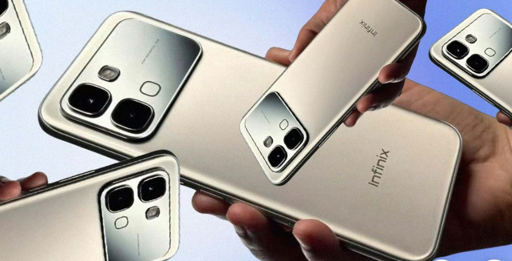

Thinner than iPhone 17 and with an enhanced battery, this Chinese smartphone costs only $200
 Infinix's latest smartphone comes with a silicone carbon battery and a very reasonable price.Infinix, a Chinese smartphone company, has released a new smartphone. It’s called the Infinix NOTE Edge, and it will be sold worldwide.
What makes it stand out from other existing smartphones is its quite slim body (7.2 mm thick, while iPhone 17 is around 7.95 mm).
Despite its thinness, the device is equipped with a 6,500 mAh silicone-carbon battery. For comparison, an average smartphone battery is equipped with 3,000 mAh or 5,000 mAh.
Silicon-carbon batteries are often used in flagship smartphones because they can store more energy, last longer, and charge faster.
The device weighs 185 grams and comes with MediaTek’s Dimensity 7100 SoC chip. It also includes a 6.78-inch, 1.5K AMOLED display with a 120Hz refresh rate.
When it comes to the smartphone’s design, the device comes in four colors and features a “3D curved” design, which should make it more comfortable to hold.
The smartphone comes with 8GB RAM and 128GB or 256GB of storage. The NOTE Edge has space for two SIM cards and is installed with Android 16 and XOS 16.